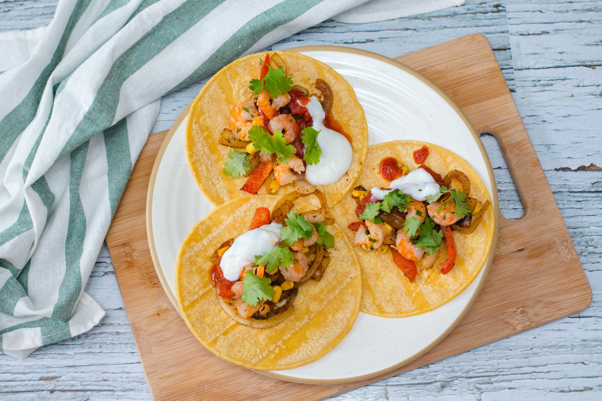
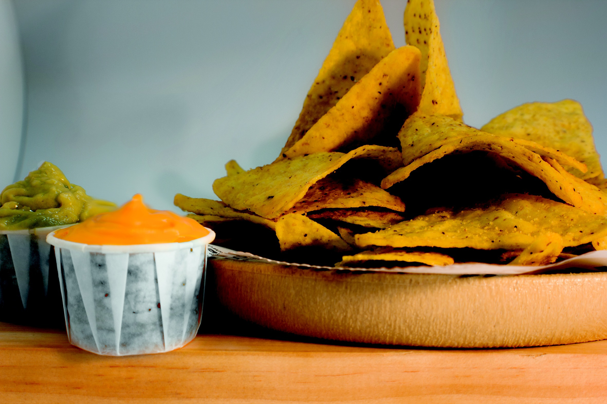

Descubre la esencia de la gastronomía mexicana
Explora sabores intensos, ingredientes frescos y recetas tradicionales que convierten cada plato en una experiencia única llena de color y sabor
Experiencias auténticas en Gastro
Sumérgete en el auténtico sabor de la cocina mexicana, donde cada plato combina tradición, frescura y una explosión de sabores. En Gastro cuidamos cada detalle para ofrecerte una experiencia gastronómica única.
Nuestros chefs trabajan con ingredientes frescos y especias seleccionadas para recrear recetas tradicionales con un toque moderno. Cada taco, cada salsa y cada guarnición están pensados para sorprender al paladar. Desde combinaciones clásicas hasta propuestas innovadoras, ofrecemos una experiencia culinaria que va más allá del sabor. Porque en Gastro, cada plato cuenta una historia.
Sabores que despiertan los sentidos
La cocina mexicana es conocida por su riqueza de sabores y su variedad de ingredientes. En Gastro reinterpretamos esta tradición para ofrecer platos que destacan por su intensidad y equilibrio.
Utilizamos productos frescos como verduras, carnes y especias para crear combinaciones únicas que respetan la esencia de cada receta. Cada bocado es una mezcla de texturas y matices que invitan a repetir.
Queremos que cada visita sea una experiencia completa, donde el ambiente, el sabor y la presentación se unan para crear momentos inolvidables.


Nachos crujientes con queso fundido
Un clásico irresistible de la cocina tex-mex que combina sabores intensos y texturas crujientes en cada bocado.
Los nachos son uno de los platos más populares para compartir, elaborados con tortillas de maíz crujientes cubiertas con queso fundido. Su origen se remonta a la cocina mexicana del norte, donde se convirtieron en una opción rápida y deliciosa. En Gastro, preparamos nuestros nachos con ingredientes frescos y de calidad, añadiendo guacamole casero, pico de gallo y una suave crema agria que equilibran perfectamente el sabor del queso.